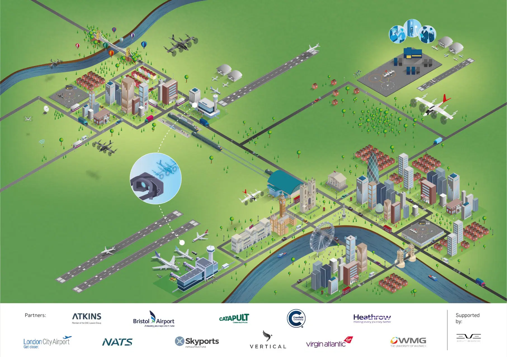

Project HADO (High-intensity Drone Operations)
Project: UK Future Flight Challenge
UKRI Grant Number: 10024815
Task: Co-simulation framework for Advanced Air Mobility
Supervisors: Dr. Yan Xu, Dr. Junjie Zhao (Secondary Supervisor)
Client: Operational Solutions Limited (OSL)